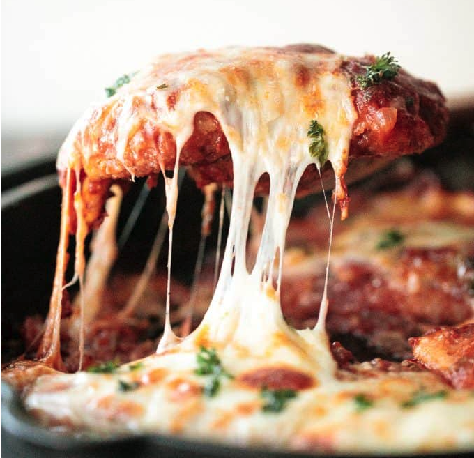

How to make Chicken Parmigiana

Ingredients
chicken breasts - You can use 4 or 5 halved chicken breasts (whatever fits on your skillet). I used 5 halves and then used the remaining chicken to make Shanghai style fried noodles the next day.
breaded coating - salt, Panko breadcrumbs, Parmesan cheese, and garlic powder.
eggs
vegetable oil
tomato sauce - onion, garlic, tomato sauce, tomato paste, Italian seasoning, fresh parsley, and salt.
mozzarella cheese - for that cheesy topping
Parmesan cheese - for the topping
fresh parsley - to garnish on top
Preparation Time
20 mins
Instructions
-
Place each halved chicken breast between 2 sheets of plastic wrap or in a freezer bag. Carefully flatten the chicken breasts with a rolling pin to achieve uniform thickness, about ½-inch thick. Don’t pound the breasts too hard. Pat dry each breast completely with a paper towel and season with 1 teaspoon salt. Set aside for at least 10 minutes.
-
In a shallow plate, whisk together Panko breadcrumbs, Parmesan cheese, garlic powder and the remaining 1 teaspoon salt. Set aside.
-
Add beaten eggs into another shallow plate.
-
Dip both sides of each halved chicken breast into the eggs to evenly coat them, and then dip it into the breadcrumb mixture. The breadcrumbs will stick to the egg wash.
-
Then, heat oil in a non stick cast-iron skillet over medium-high heat for 2 minutes until the hot oil is sizzling and shimmering.
-
Pan fry the chicken breasts for about 4-5 minutes on each side until golden and crispy. Set aside on a plate. The chicken should be almost fully cooked and the internal temperature should reach above 155 F, as measured on a meat thermometer.
- Then, prepare the tomato sauce. Remove all but 2 tablespoons of the hot oil in the skillet. Add onions and sauté for 2 minutes until soft and tender.
- add garlic and sauté for another 2 minutes until fragrant.
- Add tomato sauce, tomato paste, Italian seasoning, parsley, and salt. Stir well to combine and bring the sauce to a simmer. Turn to low heat and let it simmer for 5 minutes. Remove from heat and transfer sauce into a bowl.
- Now, let's assemble the chicken parmesan and bake. In the same skillet (or in another cast-iron skillet or casserole dish), evenly spread ½ cup of the sauce on the bottom.
- Place the chicken breasts spaced evenly apart over the sauce.
- Cover each breast with ¼ cup sauce, and top each breast with a slice of mozzarella cheese and 1 tablespoon Parmesan cheese. Sprinkle finely chopped parsley on top.
- Bake in a 425F preheated oven for 15-20 minutes until the cheese melts and turns golden brown. Serve with spaghetti and garnish with more parsley on top.
Main Menu